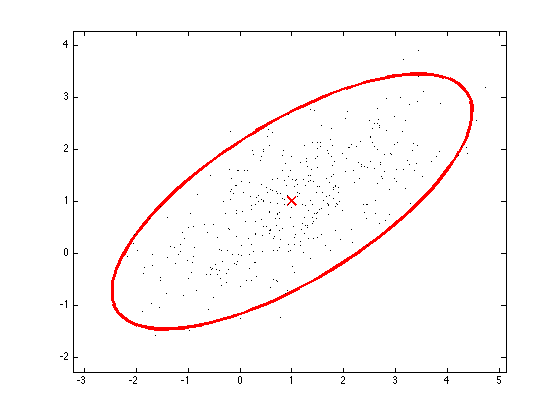
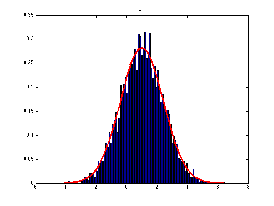
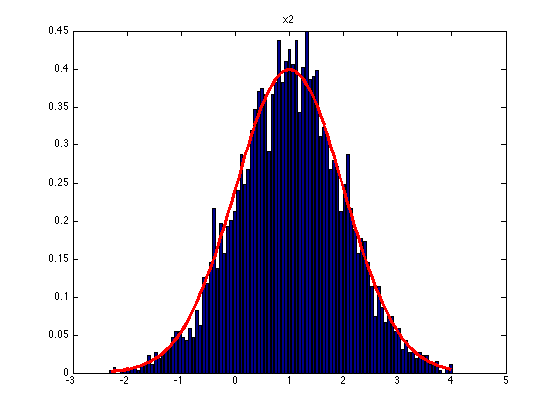

function gibbsGauss2dDemo()
S = 5000;
mu = [1 1];
C = [2 1; 1 1];
model = gaussCreate(mu, C);
setSeed(1);
xinit = 20*rand(2,1);
samples = gibbsGauss(model, xinit, S);
burnin = 1000;
samples = samples(burnin:end, :);
figure;
h = gaussPlot2d(mu, C);
set(h, 'linewidth', 3, 'color', 'r');
axis equal
hold on
ndx = 1:10:size(samples,1);
plot(samples(ndx,1), samples(ndx,2), 'k.');
printPmtkFigure('gibbsGauss2dSamples')
for i=1:2
figure;
Nbins = 100;
[h, xs] = hist(samples(:,i),Nbins);
binWidth = xs(2)-xs(1);
bar(xs, normalize(h)/binWidth);
hold on
ps = normpdf(xs, mu(i), sqrt(C(i,i)));
plot(xs, ps, '-', 'color', 'r', 'linewidth', 3);
title(sprintf('x%d', i))
printPmtkFigure(sprintf('gibbsGauss2dSamplesX%d',i))
end
if 0
seeds = [1 2];
figure; colors = {'r', 'g', 'b', 'k'};
for seedi=1:length(seeds)
seed = seeds(seedi);
setSeed(seed);
xinit = 20*rand(2,1);
samples = gibbsGauss(model, xinit, S);
burnin = 1000;
samples = samples(burnin+1:end,:);
plot(samples(:,1), colors{seedi});
hold on
end
end
end
function samples = gibbsGauss(model, xinit, Nsamples)
D = length(model.mu);
samples = zeros(Nsamples, D);
x = xinit(:)';
for s=1:Nsamples
for h=1:D
V = setdiffPMTK(1:D, h);
modelH = gaussCondition(model, V, x(V));
x(h) = gaussSample(modelH, 1);
end
samples(s,:) = x;
end
end
  